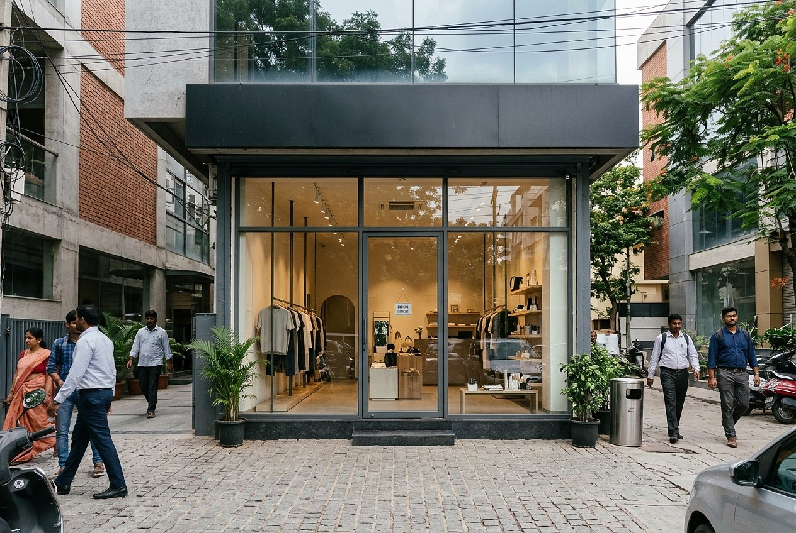
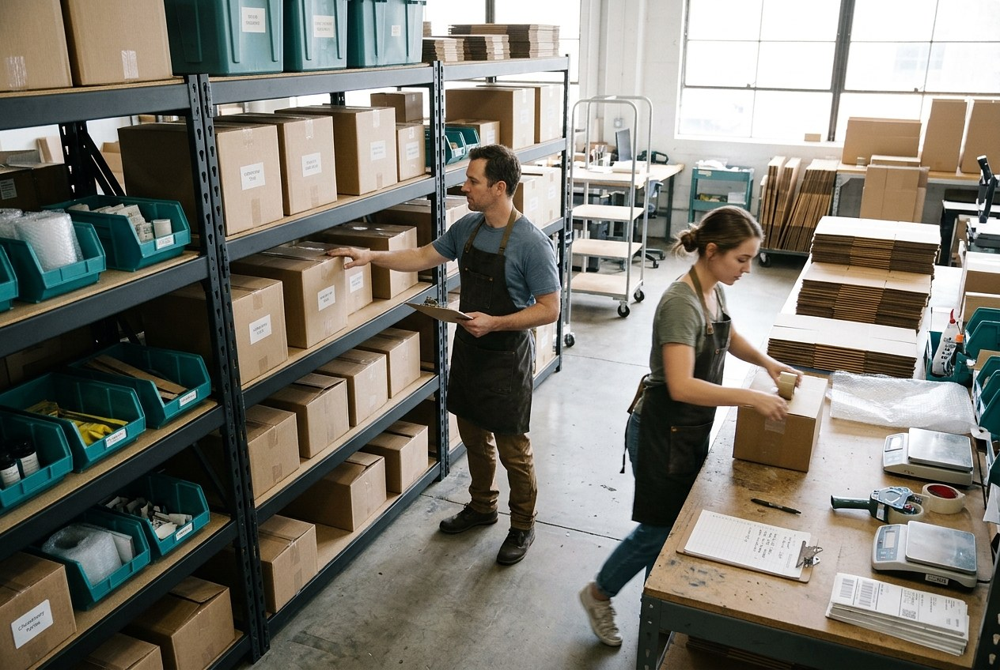
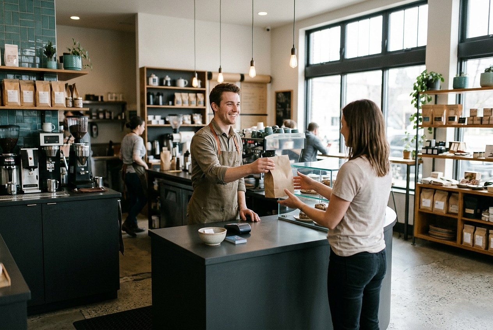
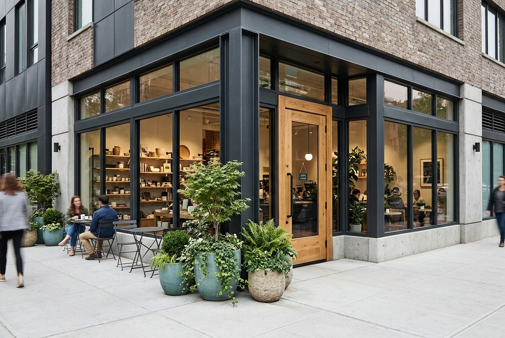
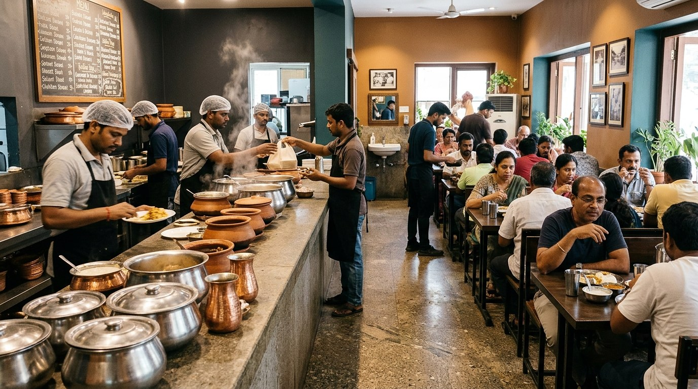
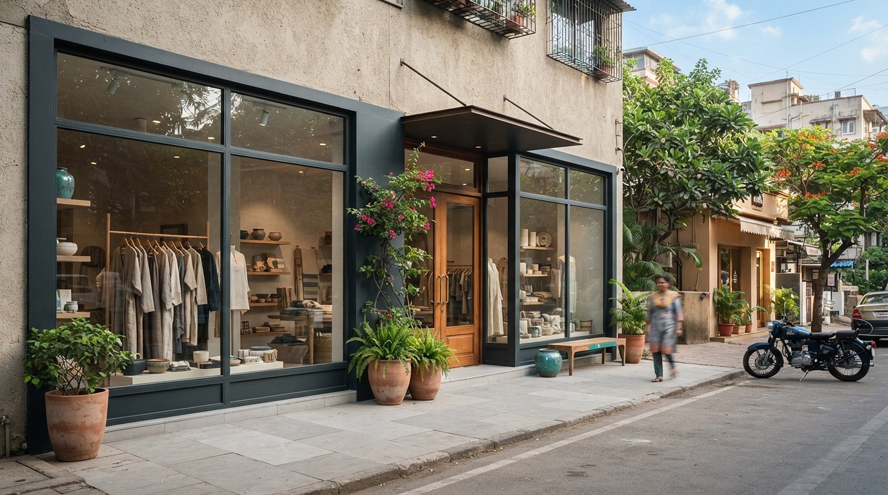

FIND THE GAPS.
FIX THE BRAND.
GROW FASTER.
We help startups, growing and established businesses overcome growth and operational challenges through practical audits and tailored improvement strategies.
Inside the Business
A business growth and operations audit for leadership teams facing stalled growth, workflow bottlenecks, or customer acquisition challenges.

Brand & Digital Presence Audit
We review your website, search and social presence, brand message and customer journey to find gaps that make it harder for the right customers to find and trust you.
Explore audit →Business Model & Financial Review
We examine the business model, pricing, margins and operating costs to find financial weak points early.

Operational & Workflow Audit
We map key workflows, handoffs, delays and responsibilities to find bottlenecks, then suggest prioritised improvements with practical timelines.
Explore audit →
Customer Experience Audit
We trace the customer journey from discovery to enquiry, purchase and repeat business to find friction limiting acquisition or loyalty.

Digital Marketing Audit & Customer Acquisition
We review marketing channels, messaging and conversion paths to assess how customers are acquired, where prospects drop off and how retention can improve.
Explore audit →Growth & Business Strategy
Where revenue exists but growth has stalled, we review positioning, capacity and past growth efforts to set practical priorities in a roadmap.
A Process Built Around Your Business
Every business is different. We adapt the audit to the problems identified, the scope required, and the resources available.
Observe
Understand how the business works through walkthroughs, records and direct observation of daily operations.
Diagnose
Identify problems and opportunities, from workflow gaps and margin leaks to missed customers.
Prioritise
Analyse root causes and rank issues by business impact, risk and effort, to start where it matters.
Recommend
Develop practical solutions that fit your needs, resources, timelines and costs.
Improve
Support agreed implementation and evaluate improvements within the engagement scope.
Different Businesses. Different Challenges.
Technology Business Strategy
An examination of digital bottlenecks, operational workflows, and technology-related processes, focused on identifying opportunities for more effective operations and scalability.
Restaurant Upgrade
A practical examination of restaurant operations, workflow coordination, and customer experience to identify opportunities for improving how the business functions.


Local Business Audit
An examination of storefront visibility, customer access, retail layout, and the factors that may influence how customers discover and navigate a local business.
Ready to Find What's Holding Your Business Back?
Start with a direct, confidential conversation about your business, the operational challenges you face, and the specific metrics you want to improve.